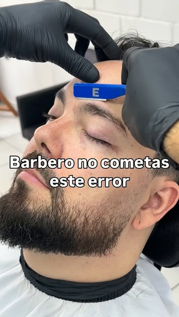
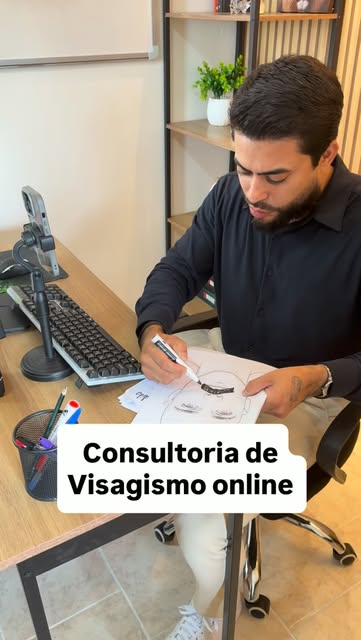

Leer
Antes de cortar, se mira. Un análisis facial completo: formato del rostro, tercios y perfil.
Curso online · Visagismo para barberos
El curso online de visagismo para barberos: aprendé a leer cada rostro y a crear el corte y la barba que le corresponden a cada cliente.
Cualquiera copia una foto. Un visagista lee un rostro, entiende a la persona y proyecta una imagen. Tu cliente no quiere el corte de la foto. Quiere verse bien él.
Antes de cortar, se mira. Un análisis facial completo: formato del rostro, tercios y perfil.

Con la lectura hecha, diseñás el corte: estructura, proporción y equilibrio para ese rostro, no para el de la foto.
La técnica al servicio del proyecto: tijera, textura y barba para que lo que pensaste quede en la cabeza del cliente.

La consulta: explicás el proyecto, el cliente lo entiende y tu trabajo pasa a valer más.
Del porqué de cada línea a cómo presentarle el proyecto a tu cliente. En orden y sin relleno.
Quiero entrar al cursoQué comunica una imagen. Líneas, formas y lo que transmiten.
Formatos de rostro, tercios, perfil y cráneo. Cómo medir antes de cortar.
Proporción, equilibrio y volumen proyectados para cada rostro.
Cortar y texturizar al mismo tiempo, crear movimiento, laterales rápidos y precisos.
Diseño y armonización de la barba según el rostro.
Escucha activa, diagnóstico y cómo presentar y cobrar un proyecto de imagen.
8,7 mil
Tijera, estructura, barba y visagismo aplicado: así enseña Walter en @curso_barberovisagista.






Seguí aprendiendo todos los días.
@curso_barberovisagistaBarberos que quieren dejar de competir por precio.
Los que ya cortan bien, pero quieren criterio para decidir qué corte hacer.
Los que quieren ofrecer consulta de imagen y cobrar por ella.
Sabés qué corte hacer antes de agarrar la tijera.
Explicás tu propuesta y el cliente confía.
Tu trabajo deja de ser un corte y pasa a ser un proyecto de imagen.

Soy barbero consultor y visagista hace más de 10 años. Creo visuales únicos y personalizados, y todos los días enseño a otros barberos a hacer lo mismo.
Espacio reservado para testimonios reales de alumnos del curso.
Acá va el testimonio real de un alumno.
Acá va el testimonio real de un alumno.
Acá va el testimonio real de un alumno.
Curso online · Método Walter Molina
Consultá el valor y las formas de pago por WhatsApp.
Quiero entrar al cursoNecesitás saber cortar lo básico. El curso no reemplaza la práctica: le suma criterio para decidir qué hacer en cada rostro.
Es 100% online. Lo ves desde el celular o la compu, a tu ritmo y las veces que quieras.
Sí. El visagismo te da el porqué de cada decisión: dejás de cortar por costumbre y empezás a cortar con un proyecto.
Las clases son en español.
Escribime por WhatsApp y te paso el valor, las formas de pago y el acceso.